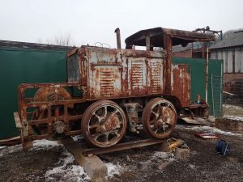
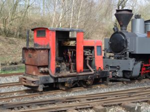
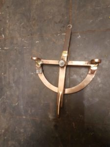

Picture Gallery
-

Baldwin Train Project
A project which hasn’t been seen on these pages for a little while is the Baldwin tractor. You may recall that this is a First World War loco, but it had subsequently been converted to standard gauge by a French company. Most of its history after 1918 is unknown, but it ended up in a quarry near the Swiss border, and then a scrapyard in Switzerland itself. This has been progressing as a low priority project at Apedale. Most current activity has been dismantling the loco; the key issues are re-gauging, fitting a replacement engine (as the current engine will foul the wheels when set to 2’0″ gauge) and general restoration. The general condition has been surprisingly good – the gearbox looked in as-new condition when it was un-sealed – but there’s an awfully long way to go! A recent milestone was passed when the standard gauge wheelsets were removed, making the loco look altogether more narrow gauge. The wheelsets will need to be dismantled, as the flycranks and axlexboxes need to be recovered for re-use, and hopefully the axles themselves. This is typical of projects which Apedale volunteers get involved – new recruits always welcomed!
-

Ruston Train Project
A few fairly major changes have taken place recently with the “frequent use” loco fleet at Apedale. Ruston No.29 “Vanguard” has been taken out of use and put into store for the time being – it has been ailing for a little while, and needs a dose of engine looking-at. This loco has been one of the stalwarts of the fleet, and arguably is the “loco which built the railway”, having done more than its fair share of hauling ballast trains, materials wagons and the like. It’s unusual for a Ruston inasmuch that it’s fitted with electric start. Hopefully, its absence will not be for long.
-

Artefact Identified (Saunders-Roe Miner's Sundial
Following the Trust’s AGM last weekend, members were taken on an extended tour of the mine operated by our colleagues at the Apedale Heritage Centre. The railways and coal mining are inextricably entwined, not least because we occupy buildings which were formerly used by the previous mining company. They weren’t particularly thorough at cleaning up when they moved out, and we still find artefacts in dark corners. One such is sown in the picture, and its function had eluded us for some time. Research has now shown that it is part of a Saunders-Roe Miner’s Sundial (Mk37). Battery powered watches and clocks are banned underground in mines, so it can be difficult to gauge the passage of time; the Miner’s Sundial was developed to overcome this problem. Keeping track of time was important – how else would the miners know when it was meal times or when the overtime started? The Sundial had a secondary purpose, which is that it could indicate astronomical north, which could provide a useful baseline when carrying out survey work. We will be donating this interesting relic to the Heritage Centre for their museum. It would seem to be mostly made of Brass.